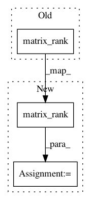

4acc34658fe60e90d08309a21fe4a41581cd85c9,linearmodels/panel/utility.py,,check_absorbed,#Any#Any#,380
Before Change
variables : List[str]
List of variable names
if np.linalg.matrix_rank(x) < x.shape[1]:
xpx = x.T @ x
vals, vecs = np.linalg.eigh(xpx)
tol = vals.max() * x.shape[1] * np.finfo(np.float64).eps
After Change
variables : List[str]
List of variable names
rank = np.linalg.matrix_rank(x)
if rank < x.shape[1]:
xpx = x.T @ x
vals, vecs = np.linalg.eigh(xpx)
nabsorbed = x.shape[1] - rank
In pattern: SUPERPATTERN
Frequency: 3
Non-data size: 3
Instances
Project Name: bashtage/linearmodels
Commit Name: 4acc34658fe60e90d08309a21fe4a41581cd85c9
Time: 2020-01-10
Author: kevin.k.sheppard@gmail.com
File Name: linearmodels/panel/utility.py
Class Name:
Method Name: check_absorbed
Project Name: scipy/scipy
Commit Name: e2467c3667e4d52e208c019872b2bda8dc6b0a8e
Time: 2015-03-14
Author: irvin.probst@ensta-bretagne.fr
File Name: scipy/signal/ltisys.py
Class Name:
Method Name: place_poles
Project Name: bashtage/linearmodels
Commit Name: e8ec5988560329b2759ef4ee544f74b33d11fc9e
Time: 2018-04-04
Author: kevin.k.sheppard@gmail.com
File Name: linearmodels/panel/model.py
Class Name: PooledOLS
Method Name: _validate_data